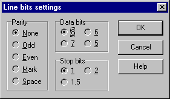

This dialogue, called from Communication Port configuration dialolue, is designed to setup data, parity and stop bits transferred by a communication port.

No parity, 8 data bits and 1 stop bit are the most widely used parameters. Usually there is no special need to change them.